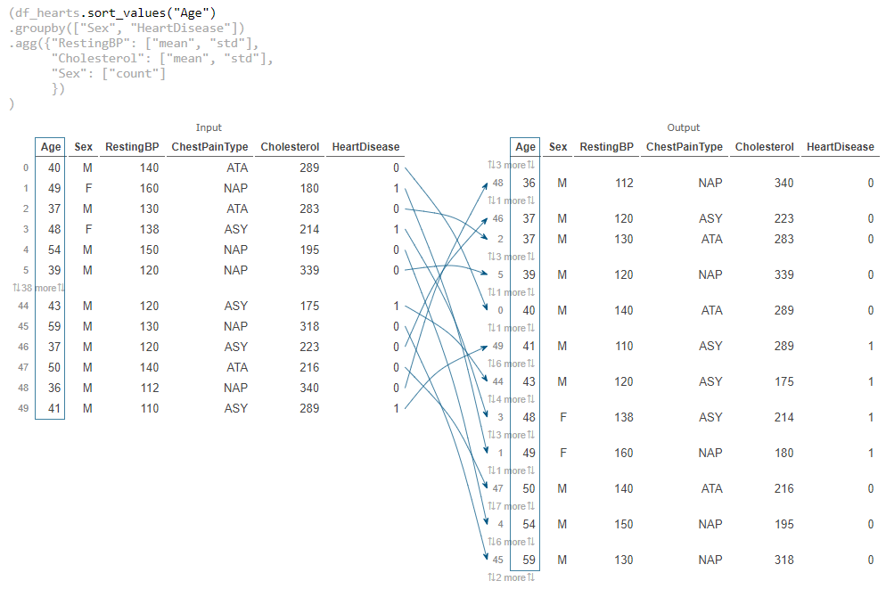
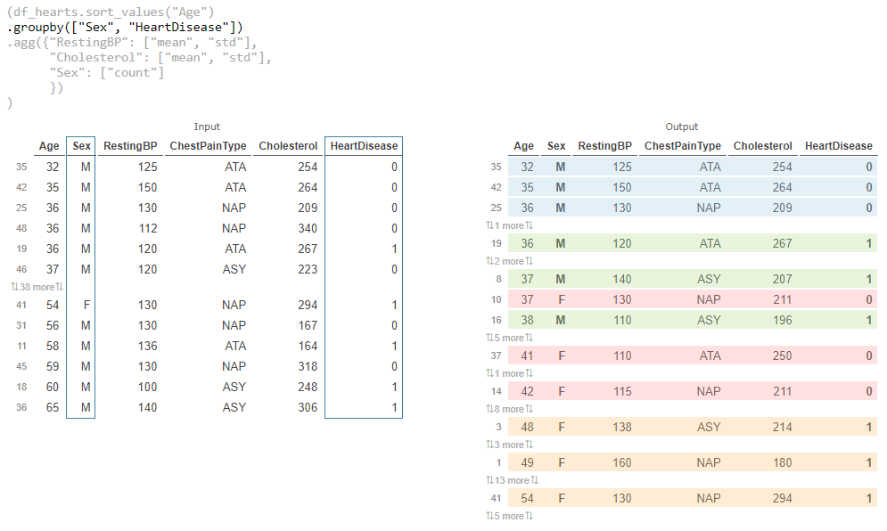
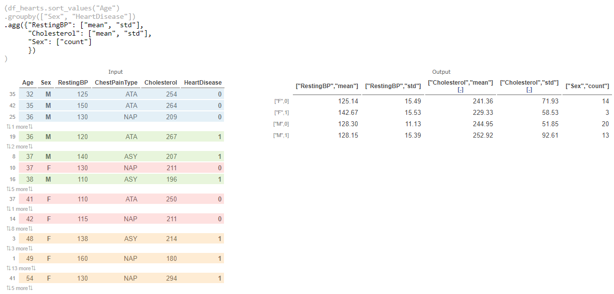

👉 This article is also published on Towards Data Science blog.
Introduction
Pandas is a powerful Python library for any exploratory data analysis. Sometimes, you may have difficulties in visualizing data transformations. Here comes PandasTutor— a web app that allows you to see how your pandas code transforms the data step-by-step.
This may come handy particularly if you have complicated transformations and want to visualize your steps or explain it to others.
PandasTutor lets you visualize different pandas transformation, from sorting to grouping by multiple columns, and even grouping by a column and performing multiple aggregations.
PandasTutor Creators
Pandas Tutor was created by Sam Lau and Philip Guo at UC San Diego. This tool is mainly developed for teaching purposes as its creator stated here. This explains some of the limitations this tool have (I will cover some of those limitations later in the post).
A similar tool called Tidy Data Tutor but for R users is created by Sean Kross and Philip Guo.
Case Study
In this article, I will provide an example where I will do a sort + group by multiple columns + performing different aggregations on multiple columns!
Dataset
Let’s use the Heart Failure Prediction Dataset Kaggle Dataset (available here). The data is available under Open Database (ODbl) License allowing “users to freely share, modify, and use this Database while maintaining this same freedom for others.” Since Pandas Tutor only works with small data, I will take the first 50 rows of hearts data).
Code
Below is the code used for the visualization in this post. You may notice that the CSV data is encoded here which is a current limitation of this tool.
import pandas as pd
import io
csv = '''
Age,Sex,ChestPainType,RestingBP,Cholesterol,FastingBS,RestingECG,MaxHR,ExerciseAngina,Oldpeak,ST_Slope,HeartDisease
40,M,ATA,140,289,0,Normal,172,N,0,Up,0
49,F,NAP,160,180,0,Normal,156,N,1,Flat,1
37,M,ATA,130,283,0,ST,98,N,0,Up,0
48,F,ASY,138,214,0,Normal,108,Y,1.5,Flat,1
54,M,NAP,150,195,0,Normal,122,N,0,Up,0
39,M,NAP,120,339,0,Normal,170,N,0,Up,0
45,F,ATA,130,237,0,Normal,170,N,0,Up,0
54,M,ATA,110,208,0,Normal,142,N,0,Up,0
37,M,ASY,140,207,0,Normal,130,Y,1.5,Flat,1
48,F,ATA,120,284,0,Normal,120,N,0,Up,0
37,F,NAP,130,211,0,Normal,142,N,0,Up,0
58,M,ATA,136,164,0,ST,99,Y,2,Flat,1
39,M,ATA,120,204,0,Normal,145,N,0,Up,0
49,M,ASY,140,234,0,Normal,140,Y,1,Flat,1
42,F,NAP,115,211,0,ST,137,N,0,Up,0
54,F,ATA,120,273,0,Normal,150,N,1.5,Flat,0
38,M,ASY,110,196,0,Normal,166,N,0,Flat,1
43,F,ATA,120,201,0,Normal,165,N,0,Up,0
60,M,ASY,100,248,0,Normal,125,N,1,Flat,1
36,M,ATA,120,267,0,Normal,160,N,3,Flat,1
43,F,TA,100,223,0,Normal,142,N,0,Up,0
44,M,ATA,120,184,0,Normal,142,N,1,Flat,0
49,F,ATA,124,201,0,Normal,164,N,0,Up,0
44,M,ATA,150,288,0,Normal,150,Y,3,Flat,1
40,M,NAP,130,215,0,Normal,138,N,0,Up,0
36,M,NAP,130,209,0,Normal,178,N,0,Up,0
53,M,ASY,124,260,0,ST,112,Y,3,Flat,0
52,M,ATA,120,284,0,Normal,118,N,0,Up,0
53,F,ATA,113,468,0,Normal,127,N,0,Up,0
51,M,ATA,125,188,0,Normal,145,N,0,Up,0
53,M,NAP,145,518,0,Normal,130,N,0,Flat,1
56,M,NAP,130,167,0,Normal,114,N,0,Up,0
54,M,ASY,125,224,0,Normal,122,N,2,Flat,1
41,M,ASY,130,172,0,ST,130,N,2,Flat,1
43,F,ATA,150,186,0,Normal,154,N,0,Up,0
32,M,ATA,125,254,0,Normal,155,N,0,Up,0
65,M,ASY,140,306,1,Normal,87,Y,1.5,Flat,1
41,F,ATA,110,250,0,ST,142,N,0,Up,0
48,F,ATA,120,177,1,ST,148,N,0,Up,0
48,F,ASY,150,227,0,Normal,130,Y,1,Flat,0
54,F,ATA,150,230,0,Normal,130,N,0,Up,0
54,F,NAP,130,294,0,ST,100,Y,0,Flat,1
35,M,ATA,150,264,0,Normal,168,N,0,Up,0
52,M,NAP,140,259,0,ST,170,N,0,Up,0
43,M,ASY,120,175,0,Normal,120,Y,1,Flat,1
59,M,NAP,130,318,0,Normal,120,Y,1,Flat,0
37,M,ASY,120,223,0,Normal,168,N,0,Up,0
50,M,ATA,140,216,0,Normal,170,N,0,Up,0
36,M,NAP,112,340,0,Normal,184,N,1,Flat,0
41,M,ASY,110,289,0,Normal,170,N,0,Flat,1
'''
df_hearts = pd.read_csv(io.StringIO(csv))
df_hearts = df_hearts[
["Age", "Sex", "RestingBP", "ChestPainType", "Cholesterol", "HeartDisease"]
]
(df_hearts.sort_values("Age")
.groupby(["Sex", "HeartDisease"])
.agg({"RestingBP": ["mean", "std"],
"Cholesterol": ["mean", "std"],
"Sex": ["count"]
})
)So our transformations is only the last few lines
(df_hearts.sort_values("Age")
.groupby(["Sex", "HeartDisease"])
.agg({"RestingBP": ["mean", "std"],
"Cholesterol": ["mean", "std"],
"Sex": ["count"]
})
)Results
Step 1: Sorting the DataFrame

sort_values() result (steps 1) (generated using PandasTutor)Visualization of the sort_values() result (steps 1) (generated using PandasTutor)
Step 2: Visualize Pandas Groupby operation
After sorting the results in Step 1 and visualizing it, we can visualize the groupby() operation

groupby() result (steps 1 and 2) (generated using PandasTutor)Step 3: Calculate different aggregations on multiple columns
Here, I will be calculating the mean and standard deviation of two columns “RestingBP” and “Cholesterol” and also provide a count for each group (here I’m using the “Sex” column to get that information.)

Visualization of the final result that is the aggregation (steps 1 - 3) (generated using PandasTutor)
Interesting sharing feature
Pandas Tutor also provides you with a shareable URL that even includes the CSV data used in the transformation. For instance, you can check my transformation code and results here or via below link!
https://pandastutor.com/vis.html#code=import%20pandas%20as%20pd%0Aimport%20io%0A%0Acsv%20%3D%20'''%0AAge,Sex,ChestPainType,RestingBP,Cholesterol,FastingBS,RestingECG,MaxHR,ExerciseAngina,Oldpeak,ST_Slope,HeartDisease%0A40,M,ATA,140,289,0,Normal,172,N,0,Up,0%0A49,F,NAP,160,180,0,Normal,156,N,1,Flat,1%0A37,M,ATA,130,283,0,ST,98,N,0,Up,0%0A48,F,ASY,138,214,0,Normal,108,Y,1.5,Flat,1%0A54,M,NAP,150,195,0,Normal,122,N,0,Up,0%0A39,M,NAP,120,339,0,Normal,170,N,0,Up,0%0A45,F,ATA,130,237,0,Normal,170,N,0,Up,0%0A54,M,ATA,110,208,0,Normal,142,N,0,Up,0%0A37,M,ASY,140,207,0,Normal,130,Y,1.5,Flat,1%0A48,F,ATA,120,284,0,Normal,120,N,0,Up,0%0A37,F,NAP,130,211,0,Normal,142,N,0,Up,0%0A58,M,ATA,136,164,0,ST,99,Y,2,Flat,1%0A39,M,ATA,120,204,0,Normal,145,N,0,Up,0%0A49,M,ASY,140,234,0,Normal,140,Y,1,Flat,1%0A42,F,NAP,115,211,0,ST,137,N,0,Up,0%0A54,F,ATA,120,273,0,Normal,150,N,1.5,Flat,0%0A38,M,ASY,110,196,0,Normal,166,N,0,Flat,1%0A43,F,ATA,120,201,0,Normal,165,N,0,Up,0%0A60,M,ASY,100,248,0,Normal,125,N,1,Flat,1%0A36,M,ATA,120,267,0,Normal,160,N,3,Flat,1%0A43,F,TA,100,223,0,Normal,142,N,0,Up,0%0A44,M,ATA,120,184,0,Normal,142,N,1,Flat,0%0A49,F,ATA,124,201,0,Normal,164,N,0,Up,0%0A44,M,ATA,150,288,0,Normal,150,Y,3,Flat,1%0A40,M,NAP,130,215,0,Normal,138,N,0,Up,0%0A36,M,NAP,130,209,0,Normal,178,N,0,Up,0%0A53,M,ASY,124,260,0,ST,112,Y,3,Flat,0%0A52,M,ATA,120,284,0,Normal,118,N,0,Up,0%0A53,F,ATA,113,468,0,Normal,127,N,0,Up,0%0A51,M,ATA,125,188,0,Normal,145,N,0,Up,0%0A53,M,NAP,145,518,0,Normal,130,N,0,Flat,1%0A56,M,NAP,130,167,0,Normal,114,N,0,Up,0%0A54,M,ASY,125,224,0,Normal,122,N,2,Flat,1%0A41,M,ASY,130,172,0,ST,130,N,2,Flat,1%0A43,F,ATA,150,186,0,Normal,154,N,0,Up,0%0A32,M,ATA,125,254,0,Normal,155,N,0,Up,0%0A65,M,ASY,140,306,1,Normal,87,Y,1.5,Flat,1%0A41,F,ATA,110,250,0,ST,142,N,0,Up,0%0A48,F,ATA,120,177,1,ST,148,N,0,Up,0%0A48,F,ASY,150,227,0,Normal,130,Y,1,Flat,0%0A54,F,ATA,150,230,0,Normal,130,N,0,Up,0%0A54,F,NAP,130,294,0,ST,100,Y,0,Flat,1%0A35,M,ATA,150,264,0,Normal,168,N,0,Up,0%0A52,M,NAP,140,259,0,ST,170,N,0,Up,0%0A43,M,ASY,120,175,0,Normal,120,Y,1,Flat,1%0A59,M,NAP,130,318,0,Normal,120,Y,1,Flat,0%0A37,M,ASY,120,223,0,Normal,168,N,0,Up,0%0A50,M,ATA,140,216,0,Normal,170,N,0,Up,0%0A36,M,NAP,112,340,0,Normal,184,N,1,Flat,0%0A41,M,ASY,110,289,0,Normal,170,N,0,Flat,1%0A'''%0A%0Adf_hearts%20%3D%20pd.read_csv%28io.StringIO%28csv%29%29%0Adf_hearts%20%3D%20df_hearts%5B%0A%20%20%20%20%5B%22Age%22,%20%22Sex%22,%20%22RestingBP%22,%20%22ChestPainType%22,%20%22Cholesterol%22,%20%22HeartDisease%22%5D%0A%5D%0A%0A%28df_hearts.sort_values%28%22Age%22%29%0A.groupby%28%5B%22Sex%22,%20%22HeartDisease%22%5D%29%0A.agg%28%7B%22RestingBP%22%3A%20%5B%22mean%22,%20%22std%22%5D,%20%0A%20%20%20%20%20%20%22Cholesterol%22%3A%20%5B%22mean%22,%20%22std%22%5D,%0A%20%20%20%20%20%20%22Sex%22%3A%20%5B%22count%22%5D%0A%20%20%20%20%20%20%7D%29%0A%29&d=2021-12-08&lang=py&v=v1Pros:
- Step-by-step visualization
- Interactive plots (you can track the data rows before and after the transformation)
- Shareable URL
Cons (current limitations):
- Only works for small codes (The code should be 5000bytes). Since the data is also encoded and not read from a file, hence, you can only visualize small datasets.
- As stated in the previous step, you have to encode the data along with the code as reading from external resources (files or links) are not supported.
- Limited Pandas’ methods support.
- You can visualize the Pandas expression only on the last line. You may have to pipe multiple steps together or run the visualizations separately.
For a complete list of unsupported features or other FAQ, you can check here.
Conclusion
In this post, we checked a nice tool for a step-by-step visualization of Pandas data transformation that generates interactive plots to compare the data before and after each transformation. This is very useful for those who want to solidify their understanding of Pandas transformation or those who wants to share those transformations with others (Pandas Tutor even provides a shareable URL).
References
Citation
@online{essi2021,
author = {Essi},
editor = {},
title = {Visualize Your {Pandas} {Data} {Transformation} Using
{PandasTutor}},
date = {2021-12-08},
url = {https://ealizadeh.com/blog/pandas-tutor-tool},
langid = {en}
}